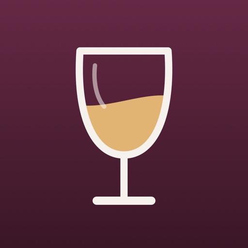

Pass the Glass EnglishLaatst bijgewerkt: 3 november 2026
Er is geen account, geen reclame en geen tracking. Wat je invoert, blijft op je eigen telefoon of iPad. Alleen als je samen proeft op eigen telefoons, gaat die proeverij tijdelijk via onze server; uiterlijk 12 uur na het laatste bericht is hij daar weg (zie hieronder).
De app bewaart alleen op jouw telefoon of iPad:
Wij kunnen deze gegevens niet zien. Ze worden nergens naartoe gestuurd, behalve wat hieronder staat bij Samen proeven op eigen telefoons.
De app vraagt toegang tot de camera, zodat je een foto van het etiket kunt maken en de QR-code van een wijnbox kunt scannen met Scan wijnbox. Je kunt ook een foto uit je fotobibliotheek kiezen; de app ziet dan alleen die ene foto. De app vraagt de camera ook om de QR-code van een proeverij te scannen als je meedoet. Een foto van een etiket wordt alleen in de app bewaard en niet verstuurd, behalve bij samen proeven: na de onthulling krijgen de andere telefoons een verkleinde kopie. Het camerabeeld bij het scannen wordt niet bewaard.
Een wijnbox open je door de QR-code op het kaartje te scannen: met de camera van je iPhone of iPad (je tikt dan op de melding), of in de app met Scan wijnbox. De app haalt de wijnen dan op bij het adres in de QR-code. Meestal is dat passtheglass.app, waar wij boxen voor wijnhandels online zetten; een wijnhandel kan een box ook op een eigen website zetten. De foto's van de etiketten komen van de adressen die bij de box staan; dat kan ook een andere server zijn, zoals Dropbox of die van een webwinkelplatform.
De app stuurt daarbij geen gegevens van jou mee: geen account, geen cookies, niets van wat je in de app hebt ingevoerd. Zoals bij elk websitebezoek zien die servers wel je IP-adres en de versies van de app en van iOS. passtheglass.app draait bij GitHub Pages; wat GitHub daarmee doet, staat in het privacybeleid van GitHub. Wij krijgen van GitHub geen bezoekgegevens en houden niet bij wie een box opent. Staat een box op de website van een wijnhandel, dan valt wat die ermee doet onder het privacybeleid van die wijnhandel. De opgehaalde wijnen en foto's worden daarna alleen op je telefoon of iPad bewaard.
Bij een proeverij kun je anderen laten meedoen op hun eigen telefoon, met een QR-code, een code van zes cijfers of een link. De telefoons bereiken elkaar via onze server bij Cloudflare (tafel.passtheglass.app). Daarvoor gaan via die server: de naam en datum van de proeverij, de namen van de proevers, welke telefoon bij welke proever hoort, de wijnen met wat je erbij hebt ingevuld (zoals producent, druif, jaargang, notities, prijs en wie de fles meebracht), een verkleinde foto van het etiket na de onthulling, en de scores. Wijnen die nog blind zijn, gaan zonder enig detail mee; prijs en meebrenger pas na de scores. Wie meedoet, krijgt na afloop de proeverij met de namen, scores en etiketfoto's in zijn eigen Proeverijen, op zijn eigen telefoon.
Er is geen account. Een telefoon krijgt alleen een willekeurig nummer met een geheim dat alleen die telefoon kent, zodat de tafel hem herkent na een verbroken verbinding en niemand anders zich voor die telefoon kan uitgeven. De server bewaart alleen de laatste stand van de proeverij, zodat een telefoon die even weg was verder kan. Stopt de organisator de proeverij, dan wissen wij alles meteen; anders uiterlijk 12 uur na het laatste bericht van de tafel, en in elk geval binnen een dag. Wil je eerder dat iets weg is, vraag dan de organisator de proeverij te stoppen, of mail ons. Wij kijken er niet in en gebruiken het nergens voor. Zoals bij elke verbinding ziet de server je IP-adres; dat bewaren wij niet.
De server draait bij Cloudflare. Cloudflare verwerkt daarbij, zoals bij elke verbinding, je IP-adres; wat Cloudflare daarmee doet, staat in het privacybeleid van Cloudflare. Wij houden zelf geen logboek bij.
Doe je niet mee op een eigen telefoon, dan gaat er niets via de server.
Je kunt een uitslag of een wijn delen als afbeelding. Op een uitslag staan de wijnen, de scores en de namen van de proevers. Delen gebeurt alleen als jij op de deelknop tikt, via het deelmenu van iOS, naar de app of persoon die jij kiest. Kies je "Bewaar afbeelding", dan vraagt iOS of de app de afbeelding in je foto's mag zetten. Wat een andere app met de afbeelding doet, valt onder het privacybeleid van die app.
Na een paar proeverijen kan iOS je één keer per versie vragen de app te beoordelen in de App Store. Dat loopt via Apple; wij zien niet wie wat beoordeelt.
Als je in de app op Feedback tikt, opent je eigen mail-app met een mail aan ons. Stuur je die mail, dan ontvangen wij je e-mailadres en je bericht, net als bij elke andere mail. We gebruiken ze alleen om je vraag of idee te lezen en te beantwoorden. De app zelf verstuurt niets.
Als je iCloud-back-up of een back-up op je computer gebruikt, neemt iOS de gegevens van de app daarin mee. Dat regel je zelf in de instellingen van je iPhone of iPad.
Je kunt proeverijen en wijnen in de app verwijderen. Verwijder je de app, dan zijn alle gegevens weg.
De app gaat over wijn en is bedoeld voor mensen van 18 jaar en ouder. Drink met mate.
Als dit beleid verandert, zetten we de nieuwe versie op deze pagina, met een nieuwe datum.
Vragen? Mail naar qurk.wijn@gmail.com.